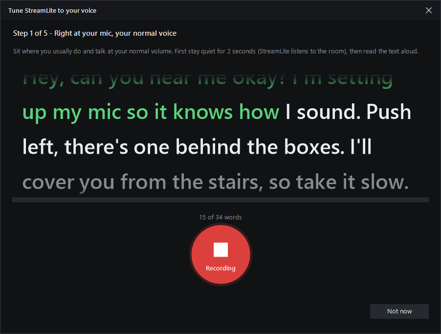
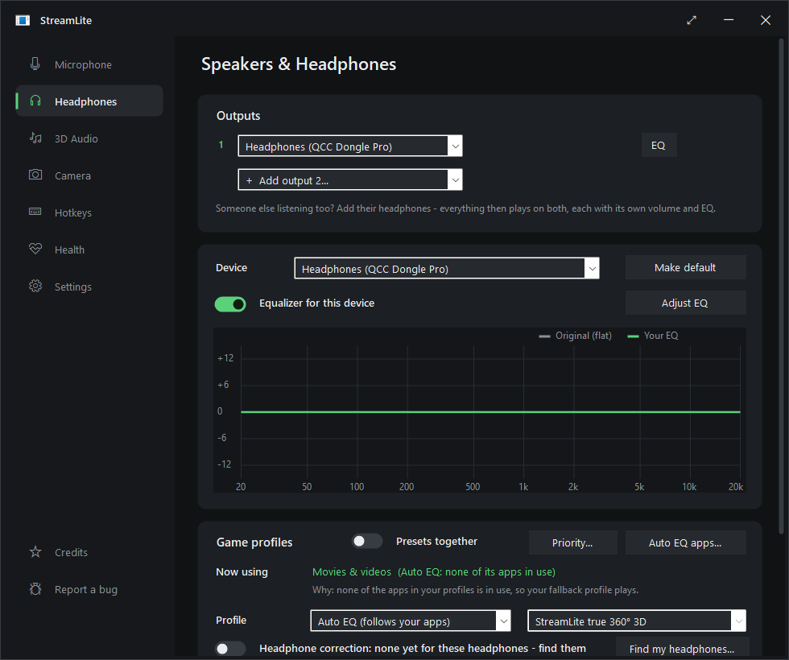
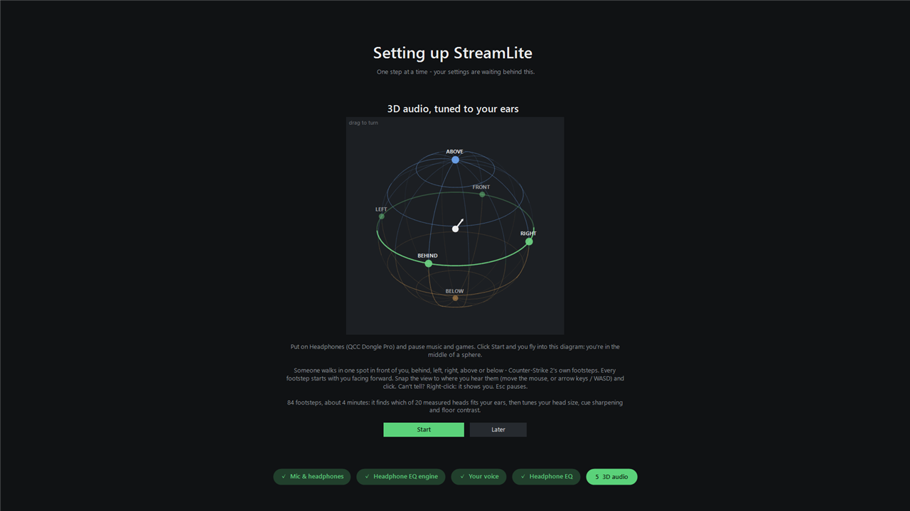
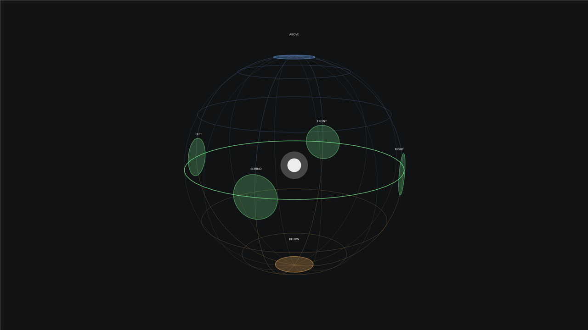
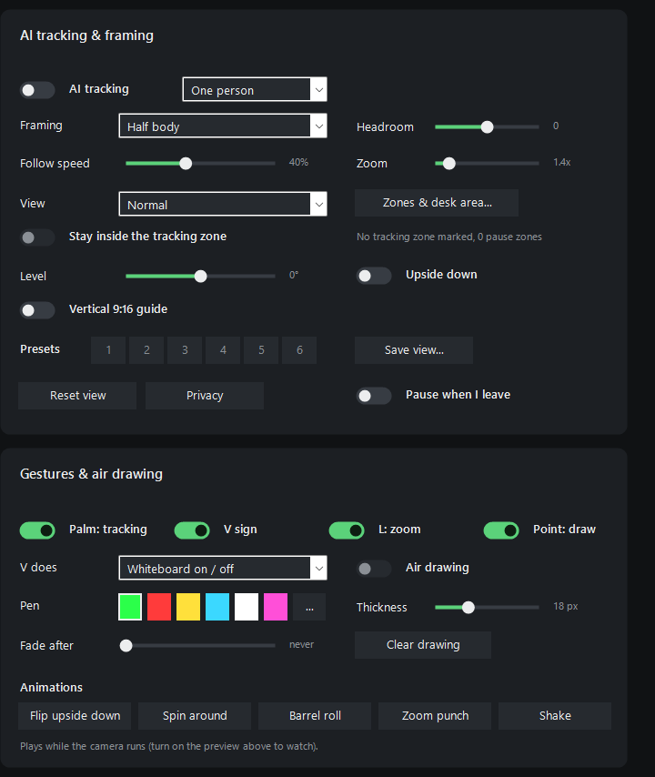

StreamLite removes background noise from your microphone with AI, turns games' surround sound into 3D audio for your headphones, and makes your headphones sound right. It works with Discord, OBS, Zoom, TeamSpeak and games, on Windows and Linux.
Windows 10/11 and Linux (64-bit). Free and open source (GPL-3.0).

It removes keyboards, fans, PC hum, traffic, dogs, room echo and even a loud machine next to you. Voice isolation is built in: DeepFilterNet 3 (studio quality, runs on your graphics card on Windows).
It includes a noise gate, auto level, compressor, de-esser, de-hum, EQ and voice styles. Record yourself and hear the result before your friends do.
Games' 7.1 sound becomes 3D sound on any headphones, using measured human-like heads. You get true 360° placement, a footstep boost and a loud-sound tamer.
It shows where sounds come from all around you: the green ear-level ring, blue above, orange below. Drag it to look from any side. Open sphere takes out walls and floors, so footsteps are never muffled.
Fly into the sphere and click where someone walks - in front, behind, left, right, above or below, with CS2's own footsteps. In about 4 minutes it finds which of 20 measured heads fits your ears. Practice mode trains you on your current settings for as long as you like.
Thousands of measured models from AutoEq, plus squig.link's reviewers for the rest (gaming headsets too) - StreamLite makes the EQ itself. Still missing? Report it in one click.
Each game gets its own sound, Music while Spotify plays, Chat while Discord is open. Presets together plays your game's preset on the game and Music's on Spotify at the same time.
The first start walks you through everything on your whole screen: mic, headphone EQ engine, your voice (hear it tuned before you go on), your headphones' EQ, 3D audio and your camera. Click a step along the bottom to go back to it; leave half way and it picks up where you left off.
The "StreamLite Camera" virtual webcam can blur your room, act as a green screen without a green screen, and work like an AI gimbal camera with any webcam: tracking, gestures, presets, whiteboard and desk view.
It installs the free drivers it needs on Windows (and what it needs from your distro on Linux), updates itself, and has a Report a bug button.
Pick your system. Every file is on the latest release, with its SHA-256 checksum in SHA256SUMS.txt.
Running a portable (zip) copy from before 4.1.4? It moves to the installer when it updates - your settings stay.
Needs Windows 10 or 11 (64-bit). The AI camera needs Windows 11. DeepFilterNet on the graphics card needs a DirectX 12 GPU; without one it runs on the CPU. With AI quality set to Low VRAM, all the AI together needs about 210 MB of video memory.
bash StreamLite-*-linux.sh--system installs it for everyone (in /opt/streamlite).curl -fsSL https://raw.githubusercontent.com/NermalYT/StreamLite/main/packaging/linux/get.sh | shWorks on Ubuntu, Debian, Linux Mint, Pop!_OS, Zorin, Fedora, Nobara, Bazzite, openSUSE, Arch, Manjaro, EndeavourOS and CachyOS (64-bit). Remove it with Uninstall... in StreamLite's Settings, or bash StreamLite-*-linux.sh --uninstall. Coming from StreamLite 4.1.2 or older (the .deb, .rpm, AppImage, tarball or Arch package)? Run the installer once: it replaces the old StreamLite and keeps your settings, and StreamLite updates itself after that.
pipewire-pulse) or PulseAudio, which every mainstream desktop already has. The installer adds everything else from your distro. StreamLite Camera needs the v4l2loopback module (the installer adds it where your distro has it; on Fedora it's in RPM Fusion). The AI runs on the CPU, or on an NVIDIA graphics card through CUDA: pick a graphics-card tier in Settings → AI quality and StreamLite downloads NVIDIA's libraries once (about 1.7 GB).

| Setting | What it does |
|---|---|
| Noise removal | Voice isolation is built in - there's no engine to pick. StreamLite runs DeepFilterNet 3, on your graphics card on Windows or on the CPU (RNNoise on CPUs with fewer than 12 threads). Strength sets how far background noise is turned down. |
| Tune to my voice (Windows)  | Five short recordings read like a teleprompter: big text, two lines in the middle, each word turning green the moment you say it (Windows' offline speech recognizer follows you word by word). Then StreamLite sets the best noise removal and quality your PC can run - DeepFilterNet on the graphics card when it fits, studio voice, the AI quality for your hardware - and shows what it chose. |
| Studio voice | On by default (Microphone page). Makes any mic sound like a broadcast mic: while you talk it learns how your voice comes through this mic and takes out the mic's colouring (thin, boxy, harsh, muffled - at most -10 / +8 dB, smooth), rebuilds the treble cheap mics cut off (headsets, laptops, Bluetooth stop at 7-13 kHz) and catches plosive pops. Learned in about 5 seconds of talking and kept per mic; Learn again after moving the mic. Adds no delay. |
| Record a sound to remove (Windows) | For a sound noise removal lets through: a TV, kids, music. Let it play, stay quiet and press Record (Tuning & EQ → Noise removal). In 8 seconds StreamLite learns what the noise remover leaves of it and takes that out from then on (adds 21 ms). Your own voice is learned in the background while you talk, so it isn't mistaken for the sound. For steady noise like a fan it tells you the noise remover already handles it. |
| AI quality (Windows, Settings) | Where voice isolation and the AI camera run and how big their models are. Low VRAM: small 16-bit models, about 210 MB of video memory, the camera in 1080p. Normal: the full models, about 430-490 MB. High VRAM: the camera's cut-out worked out at full HD - cleaner hair and edges, fewer halos - about 860-890 MB. Full CPU: nothing on the graphics card (slowest). StreamLite picks what fits your graphics card the first time. |
| Let other apps use the raw mic too | On by default (Microphone page). Discord, OBS or a game can still pick your real microphone directly while StreamLite runs, and StreamLite gets it in Windows' 10 ms packets: about 22 ms from mic to cable. Off: StreamLite holds the mic alone in its smallest packets (about 7 ms) and other apps get silence from the raw mic. Noise removal adds its own delay: RNNoise 20 ms, DeepFilterNet 50-60 ms. |
| Strength | How far background noise is turned down. 70% sounds natural. Go up for loud rooms. |
| Noise gate | Mutes what's left of the background while you don't talk. Smooth fades out; Hard cuts. |
| Auto level | Lifts a quiet voice and tames a loud one, so friends hear you at the same level. Turn off Discord's automatic gain control if you use it. |
| Compressor, de-esser, de-hum, low cut | Even out your voice, soften "s" sounds, remove 50/60 Hz mains hum and remove rumble. |
| Voice styles | Ready-made sounds to try: Natural, Clear for chat, Broadcast, Noisy room, Late night, Deep & warm, Raw. Your own tuning is kept under My settings. |
| Test your voice | Records a few sentences and plays them back with your settings, so you hear what others hear. |
| Mic input | For audio interfaces and multi-channel mics. Auto uses only the inputs that carry your voice, so an XLR mic on input 1 isn't made 6 dB quieter by an empty input 2, and an out-of-phase laptop channel can't cancel you. You can also mix all inputs or pick one. On Windows it's under Tuning & EQ → Noise removal. |
Find my headphones searches AutoEq, which has thousands of headphones and earbuds measured on calibrated rigs. It downloads the correction for yours, and every profile sounds the way it was designed on top of that. Each headset or pair of earbuds keeps its own correction: switch devices and StreamLite switches corrections.
Models AutoEq hasn't measured come from squig.link: about 150 reviewers' measurement databases, gaming headsets included (HyperX Cloud III, Razer BlackShark V3, Kraken V4, Corsair HS80, Logitech G435...). They publish raw measurements, so StreamLite makes the EQ itself against the Harman target. Still not there? Missing? Report it opens a ready-made report on GitHub with your model - you send it yourself.
With Auto-detect on, StreamLite picks the sound for what you're doing:
Games win over chat, so you get game sound while you talk on Discord in a match. Pick a profile by hand to turn auto-detect off.
Presets together (Windows, with 3D audio on): every preset plays at once on its own sound - your game's preset on the game (it plays through StreamLite) and Music's on Spotify or Chat's on Discord (straight to your headphones). The game hears exactly its own preset; your headphone correction stays under both.

StreamLite plays every app's sound itself and puts your headphone EQ on it. On Windows, when it can't hold your headphones, the EQ runs in Equalizer APO instead. On Linux everything plays through StreamLite - Out (the default output while StreamLite runs); apps kept out of 3D, and apps set to your headphones directly, still get your EQ.
You're the white dot in the middle, nose to the front: ABOVE in blue, the EAR LEVEL ring in green, BELOW in orange. Game sound lights up the ear-level ring where it comes from; sudden sounds (footsteps, shots) flash at their direction.
Right-drag the sphere to turn it and look from any side. Right double-click puts it back. The tests (footsteps, 360° walk, above / below) show where each step should come from.



Games' 7.1 has no height channels. Above and below come from cue sharpening and the test signals, so how much you hear depends on the game.
On the Camera page, turn on StreamLite Camera (AI), then pick StreamLite Camera as your webcam in Discord, OBS, Zoom or Teams. You can:
StreamLite Camera works like an AI gimbal camera (Insta360 Link 2 style) with any webcam: it moves, zooms and turns a window inside your camera's picture. With a 4K camera, up to 2x costs no sharpness.

The camera page also has every setting of your real webcam: exposure, focus, white balance and format.
How good the cut-out is follows AI quality in Settings: High VRAM gives the cleanest hair and edges; on a graphics card with little video memory, pick Low VRAM.
On the Hotkeys page, Add hotkey opens a popup: pick the area (Microphone, Headphones & 3D, Camera, StreamLite), the action, and press the key - any key with Ctrl / Alt / Shift / Win, or a mouse side button. Click a hotkey to change it, × to remove it.
Update StreamLite when it starts is on by default (Settings → Updates and bug reports). When StreamLite starts, it does this:
The MSI asks Windows for permission once, unless StreamLite runs as administrator. On Linux nothing is asked: StreamLite updates itself in your home folder (an install for everyone asks for your password). Use Check now any time.
Report a bug is in the sidebar, in Settings and in the tray menu. Pick what kind of problem it is, say what happened and how to make it happen, add pictures - your StreamLite version, system and details are added for you. Send opens the bug form on GitHub with all of it filled in (a free GitHub account); add your pictures there.
That's SmartScreen. It warns about any app that isn't code-signed or downloaded often yet. Click More info → Run anyway. StreamLite is open source: you can read every line or build it yourself.
Windows' privacy settings keep desktop apps away from your mic, so every app (StreamLite included) only gets silence. Click Open privacy settings on the Microphone page, or go to Settings → Privacy & security → Microphone. Turn on Microphone access and Let desktop apps access your microphone. StreamLite hears you within a few seconds.
Pick the interface as your microphone. Mic input: Auto finds the input your mic is plugged into after a second of talking, so an empty second input doesn't make you quieter. If you use two mics on purpose, set Mic input to Mix all inputs, or pick the input by hand.
If you use StreamLite 3D, turn the headset's own surround off in its app (G HUB, NGENUITY, Synapse, iCUE, SteelSeries GG). Otherwise games get made 3D twice and sound washed out. StreamLite shows a hint on the 3D Audio page when it detects one.
That's Windows, not StreamLite. By default it turns every other sound down 80% while a call app has a voice stream open. In StreamLite's Settings → Audio devices, turn on Keep game volume during calls. Discord has a setting of its own too: Voice & Video → Attenuation, which should be 0%.
Your mic is so loud that it distorts before StreamLite gets the sound, and no effect can undo that. Turn the gain down on the mic or audio interface (the knob), or lower its level in Windows Sound settings → Recording (on Linux, in your sound settings). StreamLite's Auto level brings you back up cleanly.
Settings → Updates and bug reports → Copy details puts your StreamLite and system version, what StreamLite is doing and your audio devices on the clipboard. Your user name is taken out. Paste it into the bug report so device problems can be fixed. On Linux, run streamlite --details.
Check these:
Set the app's input device to StreamLite - In (Discord may call it StreamLite Mic), not "Default". Health → Run setup check checks the whole path.
Something plays into the mic cable. Never pick CABLE Input or StreamLite Mic as a speaker in a game or app. StreamLite keeps game sound on its own device (Hi-Fi Cable on Windows) for exactly this reason.
Check these:
Some games (CS2, Valorant, ...) use their own HRTF; StreamLite sends those straight to your headphones on purpose.
GNOME hides tray icons. Install the AppIndicator and KStatusNotifierItem Support extension. Without it, StreamLite keeps running: start it again from the app menu to open its window.
Run the installer again (it adds pactl), or install pulseaudio-utils (Debian, Ubuntu, Fedora, openSUSE) or libpulse (Arch). On PipeWire you also need pipewire-pulse, which desktops have by default. Then Health → Run setup check.
It needs the v4l2loopback module and ffmpeg. Run the installer again; on Fedora enable RPM Fusion first. Then turn StreamLite Camera on: it asks for your password once to add the camera.
They see StreamLite Mic like any other microphone through PipeWire/PulseAudio. Nothing extra to set up.
To remove StreamLite:
bash StreamLite-*-linux.sh --uninstall. StreamLite's sound devices go with it and your default devices come back. (Installed an older StreamLite from a .deb, .rpm, PKGBUILD or AppImage? Remove that with your package manager, or delete the AppImage.)Nothing about you. It only connects to:
Bug reports are only sent when you file them yourself on GitHub.
Still stuck? Search the known issues or report a bug.
StreamLite stands on a lot of excellent, freely shared work. Thank you to everyone below. In the app, Credits (above Report a bug) shows this list for your version or any earlier release, with links to the source and the exact model files. The same per-version list is in CREDITS.md and in every GitHub release. Licenses and details are in THIRD-PARTY-NOTICES.md.
| Who | What StreamLite uses | License |
|---|---|---|
| RNNoise | Light AI noise removal (Jean-Marc Valin, Mozilla, Xiph.Org Foundation) | BSD-3-Clause |
| DeepFilterNet 3 | Studio-quality AI noise removal (Hendrik Schröter et al.); streaming export by torchDF (grazder) | MIT / Apache-2.0 |
| SADIE II | Measured head responses for 3D audio (University of York: C. Armstrong, L. Thresh, D. Murphy, G. Kearney) | Apache-2.0 |
| AutoEq | Headphone corrections (Jaakko Pasanen and the measurers: oratory1990, crinacle, Rtings, Innerfidelity...) | MIT |
| ONNX Runtime & DirectML | Run the AI models on CPU and graphics card (Microsoft) | MIT / Microsoft redistributable |
| Robust Video Matting | AI green screen and background blur (ByteDance) | GPL-3.0 |
| UltraFace | Face tracking for the AI camera (Linzaer) | MIT |
| MediaPipe Hands | Hand gestures for the AI camera (Google, via the OpenCV model zoo) | Apache-2.0 |
| VB-Audio | VB-CABLE and Hi-Fi Cable virtual devices on Windows (Vincent Burel). Donationware, so please support them. | Donationware |
| Equalizer APO | System-wide EQ on Windows (Jonas Thedering) | GPL-2.0 |
| Mono, libgdiplus, DejaVu fonts | Run StreamLite's own windows on Linux (from your distro; until 4.1.2 Avalonia UI, SkiaSharp and Inter) | MIT / Bitstream Vera |
| FFmpeg, v4l-utils, v4l2loopback | Cameras and StreamLite Camera on Linux (from your distro) | LGPL / GPL-2.0 |
| EarTrumpet, Impulcifer, VCamSample | Ideas and structure borrowed for per-app routing, HeSuVi files and the virtual camera | MIT |
| WiX, Zig, .NET | Build the installers, the camera driver and the app | MS-RL / MIT |
| ONNX, NumPy, onnxconverter-common (2.3.0+) | Build the AI model files (camera graph, Low VRAM half-precision models) | Apache-2.0 / BSD-3-Clause / MIT |
| Guided Image Filtering | Camera denoise, skin smoothing and cut-out edges (Kaiming He, Jian Sun, Xiaoou Tang) | Published research |
| SoundGuys | Measurement behind the built-in Sennheiser MOMENTUM 5 correction | Used with thanks |
| PipeWire / PulseAudio | Linux audio (your system's libpulse and pactl) | MIT / LGPL-2.1 |